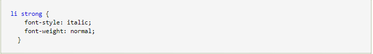
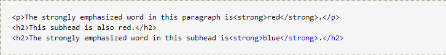

descendent selector
By defining the style by the context of the element in its location, you can make the markup more concise.
In CSS1, the selector of rule selectors in this way is called contextual selectors, which is because they depend on context to apply or avoid certain rules. In CSS2, they are called derivative selectors, but no matter how you call them, they are all the same.
A derivative selector allows you to determine the style of a label based on the context of the document. By using a derivative selector reasonably, we can make the HTML code neatly.
The following is written as follows:

The usage is as follows:
